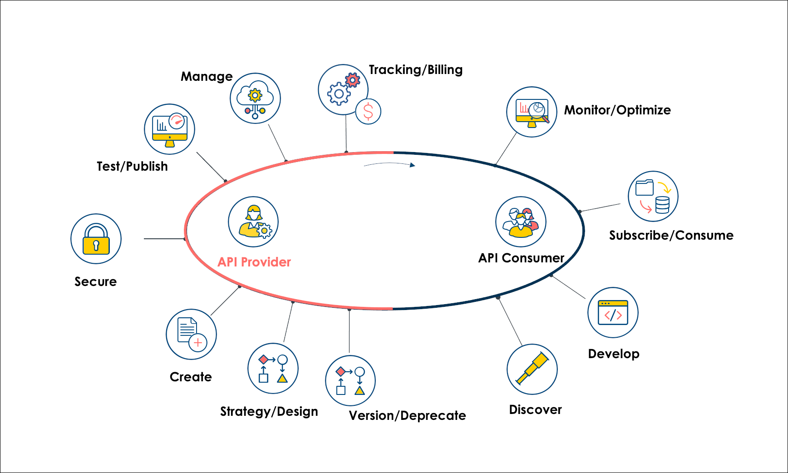

The API and Proxy Lifecycle
An overview of the lifecycle of APIs and Proxies that you create and publish in SnapLogic's API Management.
Overview

| Lifecycle stage | Role | SnapLogic APIM component | |
|---|---|---|---|
| API | Proxy | ||
| Strategy / Design | API developer | external | |
| Create APIs and API Versions | Create Proxies and Endpoints | Org Administrator | API Manager |
| Secure | Org Administrator | API Policies | |
| Publish | Publish | Org Administrator | Developer Portal |
| Manage | Manage | Org Administrator | Developer Portal |
| Tracking / Billing | API developer / Org Administrator | external | |
| Monitor / Optimize | Monitor / Optimize | Org Administrator | API Dashboard |
| Subscribe | Subscribe | API consumer | Developer Portal |
| Manage Subscriptions | Org Administrator | Subscription Manager | |
| Consume | Consume | API consumer | external |
| Discover | Discover | API consumer | Developer Portal |
| Deprecate | Deprecate | Org Administrator | Developer Portal |
| Retire | Retire | Org Administrator | Developer Portal |